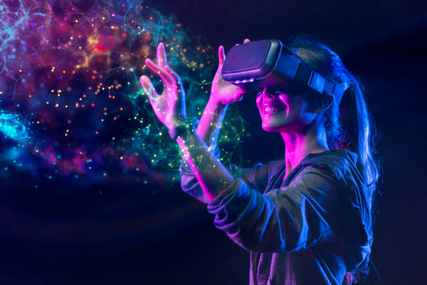

A realidade virtual (RV) é uma tecnologia que permite aos usuários mergulhar em ambientes digitais tridimensionais simulados, onde podem interagir com objetos, pessoas e o ambiente de maneira semelhante à interação no mundo real. Ela é projetada para criar uma experiência sensorial imersiva, na qual os sentidos do usuário, como visão, audição e, em alguns casos, tato, são enganados para que a pessoa sinta que está realmente presente no ambiente virtual.
A RV normalmente envolve o uso de dispositivos como óculos de realidade virtual (VR), fones de ouvido de áudio 3D e controladores de movimento. Os óculos de RV exibem uma cena digital que se move de acordo com a movimentação da cabeça do usuário, proporcionando uma visão panorâmica do ambiente virtual. Os fones de ouvido de áudio 3D proporcionam áudio espacial que se adapta à direção em que o usuário está olhando, tornando a experiência mais imersiva. Os controladores de movimento permitem que os usuários interajam com o ambiente virtual, tocando objetos, movendo-se pelo espaço virtual e realizando diversas ações.
A realidade virtual é usada em uma variedade de campos, incluindo jogos, simulações de treinamento, medicina, educação, design de produtos, arquitetura e entretenimento, entre outros. Ela continua a evoluir com o tempo, tornando-se cada vez mais sofisticada e acessível, o que amplia seu potencial impacto em diversas áreas.

Onde são aplicadas a Realidade Virtual:
Jogos: A RV é amplamente usada em jogos para criar experiências altamente imersivas, onde os jogadores podem se sentir como se estivessem dentro do mundo do jogo
Treinamento e Simulação: Setores como o militar, a aviação, a medicina e a indústria utilizam a RV para simular cenários de treinamento e simulações realistas, permitindo que os profissionais aprendam e pratiquem habilidades em ambientes seguros e controlados.
Arquitetura e Design:
A RV é usada para visualização arquitetônica, permitindo aos clientes e arquitetos explorar espaços em 3D antes de construí-los. Também é usado em design de produtos para prototipagem virtual.
Educação:
A RV é usada para criar ambientes de aprendizado interativos, onde os alunos podem explorar conceitos complexos de forma mais envolvente.
Medicina e Saúde:
Na área da saúde, a RV é usada para treinamento de cirurgiões, terapia de exposição para tratar fobias e no alívio da dor.
Turismo:
A RV é usada para proporcionar experiências turísticas virtuais, permitindo que as pessoas explorem destinos antes de viajar ou para aqueles que não podem viajar fisicamente.
Entretenimento:
Além dos jogos, a RV é usada para criar experiências de entretenimento imersivas, como filmes e shows virtuais.
Terapia e Reabilitação:
A RV é usada em terapia ocupacional e física para ajudar pacientes a recuperar funções motoras ou superar traumas.
Treinamento de Equipes:
Empresas utilizam a RV para treinar equipes em situações de trabalho específicas, como combate a incêndios, evacuações de edifícios e atendimento ao cliente.
Arqueologia e História:
Arqueólogos e historiadores usam a RV para recriar ambientes históricos e permitir que as pessoas experimentem o passado de maneira mais imersiva.
Indústria Automobilística e Aeronáutica:
Empresas utilizam a RV para projetar e testar protótipos de veículos e simular experiências de condução e voo.
Psicoterapia e Tratamento de Transtornos Mentais:
A RV é usada para exposição terapêutica, onde os pacientes enfrentam seus medos e traumas de forma controlada.
Esses são apenas alguns exemplos das muitas áreas em que a realidade virtual é aplicada. A tecnologia continua a evoluir e encontrar novos usos e aplicações em diversas indústrias e campos.